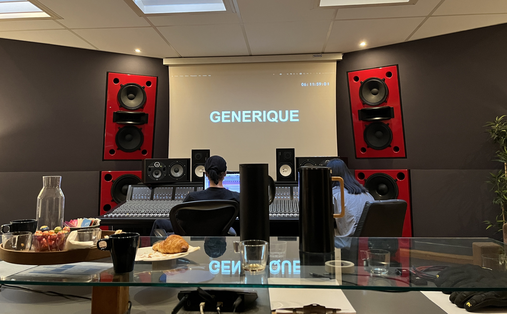

Sélection
Projets
Des réalisations de composition, d’orchestration et d’arrangement, présentées avec leur contexte et leurs crédits.

Photo : Matthieu Roy
Des réalisations de composition, d’orchestration et d’arrangement, présentées avec leur contexte et leurs crédits.
